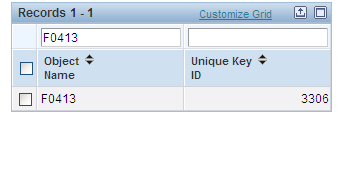
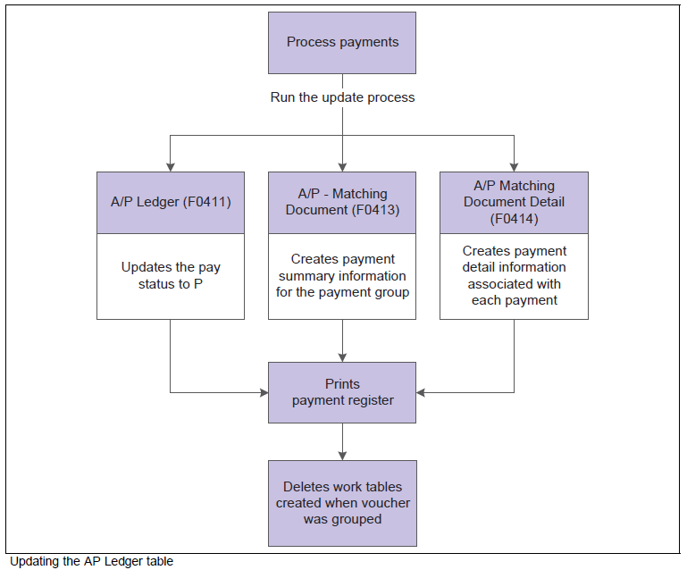
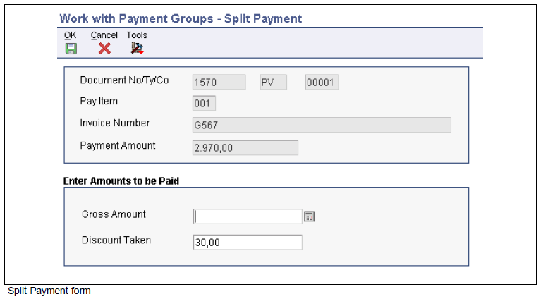

The Create Payment Control Groups (R04570) populates:
A/P Payment Control Group (F04571).
A/P Payment Header (F04572).
A/P Payment Detail (F04573).
Because the system stores the payment group information in temporary work tables, many revisions can be made prior to writing and completing the payments without affecting the Accounts Payable Matching Document (F0413) table and the Accounts Payable Matching Document Detail (F0414) table. When a payment group is updated, the system removes the payment group information from the temporary work tables and creates records in Accounts Payable Matching Document (F0413) table and the Accounts Payable Matching Document Detail (F0414). Therefore, any changes should be made to the payment group before it is updated. Payment groups in the Work with Payment Groups (P04571) application are at one of the following statuses:
Status
Description
Write
The pay item is ready to be written.
Update
The payment has been written and is ready to be updated in the F0411 table.
Prior to writing payments, the Work with Payment Groups (P04571) program can be used to:
Change information at the payment and voucher levels.
Remove payment groups, payments and vouchers from the payment cycle.
Change control information for payment groups.
After payments are written, the Work with Payment Groups (P04571) program can be used to:
Void payments that have been written.
Remove payment groups, payments and vouchers from the payment cycle.
Scope
This document discusses how to Work With Payment Groups (P04571) within Oracle JD Edwards EnterpriseOne Financial system.
Details
Processing Options for Work With Payment Groups (P04571)
Print Tab
Processing Option 1: Default Print Program Version - Specify the version that the system uses for the print program and attachment program. If this processing option is left blank, the system uses the default version ZJDE0001.
Processing Option 2: Payment Control Group Output - Specify the output configuration for Payment Control Groups (PCG). Valid values are:
Blank (Separate files by PCG).
1(Separate files by bank account).
2 (Send multiple PCGs in one spool file).
Processing Option 3: Save Spool File (FUTURE) - Specify if the system saves a copy of a spool file after it has printed. This option is not yet functional in Oracle JD Edwards EnterpriseOne software.
Processing Option 4: Hold Spool File (FUTURE) - Specify if the system holds a spool file. This option is not yet functional in JD Edwards EnterpriseOne software. Valid values are:
Update Tab
Processing Option 1: Default Register Program Version - Specify the version number of the register program. If this processing option is left blank the system uses the default ZJDE0001 version.
Processing Option 2: Post Void Payments - Specify whether the system should post void payments to the General Ledger (F0911) or not. Void payments include alignment checks and reset payments. Void payments also include checks that are printed as Void so that the stub can be used for additional information continued from the previous stub. Valid values are:
Blank (Do not post void payments to the general ledger).
1 (Post void payments to the general ledger).
Processing Option 3: Submit Post Program - Determines if payments are automatically posted to the General Ledger (F0911) during the Update process. Valid values are:
Blank (Do not automatically post payments).
1 (Automatically post payments).
Display Tab
Processing Option 1: Display Business Units - Specify if the system displays the business unit that is assigned to the payment control groups. Valid values are:
Blank (Do not display the business unit).
1 (Display the business unit).
Note: This field is only valid if the Create Payment Control Groups (R04570) program processed payment groups by Business Unit (data dictionary item MCU).
Processing Option 2: Next Status Selection
Write Status - Enter 1 to display payment control groups with a Next Status (data dictionary item CRC) of WRT. This option can be changed in Work with Payment Groups (P04571).
Update Status - Enter 1 to display the payment control groups with a Next Status of UPD. This option can be changed in Work with Payment Groups (P04571).
Processing Option 3: G/L Bank Account - Enter a value for the GL bank account selection criteria.
Processing Option 4: Specify Preloaded Values
Originator - Enter the user ID of the person to display only the payment control groups created by this originator. The value that you enter should be the same as in the Transaction Originator (data dictionary item TORG) field in the Create Payment Control Groups (R04570) program. Leave this processing option blank to search on all transaction originators.
Payment Control Group Version - Enter a version number of the Create Payment Control Groups (R04570) to display only payment control groups created with this version. Leave this processing option blank to search on all versions.
Business Unit - Enter a business unit to display only the payment control groups created for that business unit. Leave this processing option blank to search on all business units.
Payment Instrument: Enter a payment instrument to display only the payment control groups created with this payment instrument. Leave this processing option blank to search on all payment instruments.
Currency Code: Enter a currency code to display only the payment control groups created with this currency code. Leave this processing option blank to search on all payment currencies.
Processing Option 5: Alternate Currency
Display Alternate Currency Amounts - Enter 1 to display the Payment Amount (data dictionary item PAAP) in the alternate currency. This conversion is used for display purposes only.
Alternate Currency Effective Dates - Enter the effective date for the currency's exchange rate or leave this processing option blank to use the system date.
Currency Tab
Processing Option 1: Exchange Rate
Effective Date- Specify the date used to retrieve the exchange rate when writing foreign or alternate currency payments. If this processing option is left blank, the system uses the payment GL Date (data dictionary item DGJ). If an effective date is entered that has no corresponding exchange rate in the Currency Exchange Rate (F0015) table, the system uses the exchange rate on the voucher.
Use Voucher's Rate - Enter 1 to use the voucher's exchange rate when writing foreign payments. Leave this processing option blank to use the exchange rate for the specified effective date.
Process Tab
Processing Option 1: Interactive Process - Determines how automatic payments are processed. Valid values are:
Blank (Submit the print and update jobs for batch processing).
1 (Process payments interactively).
Overview of Revising Unprocessed Payments (P04571)
Changes that can be made to vouchers and payments in a payment group before it has been written include:
Excluding debit memos (credit vouchers) - Debit memos occur when you have overpaid a supplier or have been issued credit from a supplier. Before a payment group is written, debit memos can be removed.
Splitting payments - If only a partial payment of a voucher is required, the payment can be split using the Work with Payment Groups (P04571). A Payment is split by using the Split option in the Row Exit. When the Gross Amount (data dictionary item AG) of a voucher is modified using this split option, the system creates a new pay item on the voucher for the remaining balance. This new pay item is given the default pay status, which is typically A (Approved) for payment. The new pay item is not included in the current payment group.
Revising the Value Date (data dictionary item VLDT) - Typically, the Value Date applies to draft processing and indicates the date that a payment reaches the appropriate bank.
Removing a voucher from a payment group - If a voucher needs to be removed from a payment group, use the Undo feature in the Row exit to remove it. The system resets the pay status of the voucher from payment in process to Approved and removes it from the group.
Removing unprocessed payments - If a payment should not be completed, use the Undo feature in the Row exit to remove it from the payment group.
Removing an entire payment group - Use the Undo option from the Row exit to remove an entire payment group.
Revising control information for a payment group - Control information that can be changed includes the Sequence ID and the different payment print programs.
Write Payment Groups (P04571)
When payments are written, the payments are either printed or copied to a bank tape.
Steps to write an entire payment group:
Open Work with Payment Groups application (P04571).
Search for the desired payment group.
Ensure that the payment group's Next Status (data dictionary item CRC) is set to WRT.
Highlight the payment group.
Choose the Write option from the Row exit.
The user is prompted to verify the Next Payment Number is correct.
Steps to write a single payment:
Open Work with Payment Groups application (P04571).
Search for the desired payment group.
Ensure that the payment group's Next Status (data dictionary item CRC) is set to WRT.
Highlight the payment group.
Click the Select button.
Find the desired payment(s) and highlight them.
Choose the Write option from the Row exit.
The user is prompted to verify the Next Payment Number is correct.
When payments are written, the system:
Creates a matching document with a document type of PK (for automatic payment) in the temporary worktables.
Creates a matching document with a document type of PT (for electronic funds transfer) in the temporary worktables.
Assigns payment numbers.
Changes the Next Status (CRC) of the payment group from WRT (write) to UPD (update).
Prints payments using the appropriate print program as defined by the Payment Instrument (data dictionary item PYIN) and GL Bank Account (data dictionary item ANI).
Prints attachments using the Print Attachments Standard UBE (R04573), if needed.
Prints a debit statement using Print AP Payment Debit Statements (R04574) for any Debit Memos.
Updates the Pay Status in the F04572 from '#' to '*'.
Note: When you write a payment whose amount, in words, exceeds the number of characters provided in the print program, the system prints checks with digits for the payment amount instead of words.
Printing Attachments
The standard JD Edwards EnterpriseOne check format is designed to print a maximum of ten detail lines on a payment stub. If a payment has more detail lines than specified on the GL Bank Account Information in Work with GL Bank Accounts (P0030G), attachments can be used to print additional detail lines. To use attachments, Processing Option 2: Print Attachments on the Printing tab of the Create Payment Control Groups (R04570) must be set to 1 prior to creating payment groups.
Create Payment Control Groups (R04570) controls the printing of attachments. The P04572 payment format is designed to print ten detail lines on a payment stub. However, you can specify a different number of detail lines per payment stub in Work with GL Bank Accounts (P0030G). If more than ten, a print payment program that can accommodate the number of lines must be used. If a payment has more detail lines than specified, and Processing Option 2: Print Attachments is set to 1, the payment stub prints See Attachment and all detail prints on the attachment. If Processing Option 2: Print Attachments is Blank and more detail lines exist than specified, the Auto Payments Write/Reset program (P04572) prints the specified number of detail lines on a stub, voids the payment, prints the specified number of detail lines on the next stub, voids the payment, and so on until all detail lines have been printed. The payment form following the last detail line prints with the full payment amount. The system can print as many as 99 payment stubs for a single payment. The number of detail lines that the system prints for a single payment depends on the number of detail lines on each payment stub. For example, if you print 10 detail lines on each payment stub, the system can print 990 (10 detail lines times 99 payment stubs) for the payment. In this example, if more than 990 lines of detail exist, the system prints multiple payments.
Printing Debit Statements
A debit statement is printed for negative payments and is used to notify suppliers when they have been overpaid. By assigning a program to the debit statement component, a separate debit statement form is printed with a payment. A debit statement is automatically generated if debit memos and open vouchers for a supplier net to zero or net to a negative total.
Note: Only when the total is positive does Automatic Payment processing close and process vouchers, otherwise, only a Debit Statement is printed. To close out vouchers that total zero dollars and/or negative, use Manual Payments with Voucher Match (P0413M).
Supplier Vs. Factor/Special Payee
Payments are always issued to the Payee Address Number (data dictionary item PYE). The Payee (PYE) is populated during Voucher Entry and is determined by Processing Option 5: Alternate/Payee on the Defaults tab of the Voucher Entry Master Business Function (P0400047):
If a 1 is entered, the Payee (PYE) field is populated with the Address Book Number in the Factor/Special Payee (data dictionary item AN85) of the Supplier Master (F0401) record.
If blank, the Payee (PYE) field is populated using the Supplier's Address Book Number.
The Payee (PYE) field can also be overwritten during voucher entry.
Writing Payments for EFT Payment Groups
When writing payment groups assigned to Payment Instrument (PYIN) T, the system creates records in the A/P Payment Tape (F04572OW) table. The system creates new records in the A/P Payment Tape (F04572OW) table for each payment group written. Each payment group is uniquely identified in the A/P Payment Tape (F04572OW) table by the value that is specified in the Member ID field (data dictionary item KNMID).
Data Processing
The system does not update the Accounts Payable Ledger (F0411), Accounts Payable Matching Document (F0413) or Accounts Payable Matching Document Detail (F0414) tables until the Update process completes. All payment information remains in the following temporary work tables after the Write process is completed:
A/P Payment Processing - Header (F04571)
A/P Payment Processing - Summary (F04572)
A/P Payment Processing - Detail (F04573).
Record Reservation for Payments
Record reservation for payments is the process where the system determines, prior to writing payments, how many payment numbers to reserve for a payment cycle. The system adds that number to the Next Payment Number (data dictionary item NXTC) in the Bank Transit Master (F0030) table for the GL Bank Account being used. For example, if the Next Payment Number (NXTC) is 258 and the system determines 30 payment numbers are going to be used for the next payment cycle, the system updates the next payment number to 288. Therefore, when another user attempts to write payments using the same GL Bank Account, the next payment number begins at 288.
The purpose of using the record reservation process is to prevent duplicate payments and is especially useful when more than one user is making payments for the same bank account. If two users access the Write payments process simultaneously, the system activates the record reservation process for the first user and sends an error message to the second user. When the first user completes the record reservation process, the second user can access a payment number record and reserve the number of payments that are needed for that payment cycle.
Payment ID Using Next Numbers
When running a write payment program (e.g. R04572) the system assigns each payment a unique number. This number is the Payment ID (data dictionary item PYID). The Payment ID (PYID) prevents pay items in one payment from being mixed with pay items that are paid on a different payment. "The JD Edwards EnterpriseOne Accounts Payable system uses next unique number program P00022 (F00022) to assign Payment ID (PYID) numbers.
Databrowser Query of Unique Key File (F00022) for F0413, which is where the Payment ID Next Number is pulled from.

When the Write of a Automatic Payment Group is performed, the following pop up screen displays to verify the Next Number for the payment:
Caution: This screen allows you to confirm what your next number is for live physical payments and is not the number used for EFT/ACH payments. This number displayed may not be used depending on the Payment Instrument (PYIN) and Pre-Note Code (AB1) setting in the Supplier Master (P04012). The Next Number used for EFT payments is pulled from the Next Number (P0002) application under System Code 04, on the fifth line down labeled ACH.
Reset Payments Groups (P04571)
Payments may need to be rewritten after already completing the Write process in certain situations such as a paper jam, or wrong payment date. Payment groups can only be rewritten if they have not been Updated yet. To rewrite payments, the payment control group must be Reset using the Row exit option. Written payments have a Next Status (CRC) of UPD (update). After resetting the payments, the status is changed back to WRT (write). At this point, any issues can be corrected and the Write process can be rerun.
If you need to undo or reset an EFT payment, the tape affected can be identified in the Copy Bank Tape File to Tape (P0457) program, which is accessed from the Automatic Payment Processing menu (G0413). This program shows information such as the File ID (data dictionary item FILE) and Member ID (data dictionary item MID). If payments are reset, you must delete the bank tape record before rewriting the payments.
When resetting payments:
If a new beginning payment number is entered, the system voids any payments that were selected for reset and have a payment number that is less than the new beginning number, if that number was previously assigned.
If the default next payment number is accepted, the system voids payments by writing zero records.
Processing Option 2: Post Void Payments on the Update tab of Work with Payment Groups (P04571) determines if these voided payments get stored in the General Ledger (F0911).
You can reset an entire payment group, a single payment within a group, or a pay item within a payment.
Undo Payment Groups (P04571)
When a payment group or voucher was created in error, use the Undo feature to reverse the payment control group or payment. When undoing a payment or payment control group, the system:
Voids the payment(s) using the same process described in the Reset Payment Groups (P04571) section.
Removes the voucher(s) from the payment group, or deletes the entire payment group.
Resets the Pay Status (PST) of the voucher from Payment in Process (#) to Approved (A).
Steps to undo a pay item:
Highlight/select the row for the payment group in the Work with Payment Groups application P04571
Click the select button at the top of your screen
Find the voucher pay item(s) and highlight/select the rows for them
Row exit to undo
When prompted with the screen to validate that you want to undo the selected payments, click yes
Steps to undo an entire payment group:
Highlight/select the row for the payment group(s) in the Work with Payment Groups application P04571
Row exit to undo
When prompted with the screen to validate that you want to undo the selected payment group, click yes.
If you are working with Oracle Software Support on a Service Request with a Support Engineer within EnterpriseOne Accounts Payable and they want you to verify if your three temporary payment tables (F04571, F04572 and F04573) are not corrupted, they may ask you to first Undo ALL existing payment groups. For steps on this process, please see the Preventing Duplicate Payments (P04571) section. Common issues that may be encountered:
Not Able To Undo all Groups - If you have undone all groups except one and this group does not have an amount listed, this most likely means it is a corrupted group and is only showing in the temporary header table (F04571). After all groups that can be undone query the three tables (F04571, F04572 and F04573). If this group exists only in the F04571, it is corrupted and should be removed.
Undo all groups still shows data - If you are able to Undo all payment groups at both Write and Update status but a query of the three temporary payment tables (F04571, F04572 and F04573) shows data remaining indicates the tables themselves are corrupted. These must be cleared and regenerated by your CNC administrator to fix the issues. Export this data for future reference because you may need to research the data listed to see if any of the vouchers listed have truly been paid or were never paid.
Caution: Above are examples of how Automatic Payments in Work With Payment Groups (P04571) can become corrupted for one reason or another. We strongly encourage you to log a Service Request with Oracle Software Support for assistance with the above process, but you can have these steps to add this information to the Service Request to assist with the troubleshooting.
Update Payment Groups (P04571)
After payment groups have been written, the groups must be updated to create transaction records in the Accounts Payable Matching Document (F0413) and Accounts Payable Matching Document Detail (F0414). Payment control groups can be Updated only if the Next Status (CRC) is UPD (update).
To update a payment group:
Highlight/select the row for the payment group(s).
Select the Update option from the Row exit.
When a payment group is updated, the system:
Processes void payments.
Changes the pay status of vouchers from payment in-process (#) to paid (P) and sets the Open Amount (PAAP) to zero.
Prints the Payment Register (R04576)
Copies the payment information to the Accounts Payable Matching Document (F0413) and Accounts Payable Matching Document Detail (F0414) tables from the temporary work tables.
Removes the records from the temporary work tables:
A/P Payment Control Group (F04571)
A/P Payment Header (F04572)
A/P Payment Detail (F04573).
Note: EFT payment records remain in A/P Payment Tape (F04572OW)until they are manually deleted.
The following graphic illustrates what happens when the system updates the Accounts Payable Ledger (F0411):

Splitting a Payment Group (P04571)
There may be a reason to split a payment group. To do so, use the Split option from the Row exit when on the Work with Payment Detail (W04573A) form.
Access the Split Payment form.

Revise The Value Date of a Payment (P04571)
There may be a reason to revise the Value Date (data dictionary item VLDG) of a payment. The Value Date (VLDT) is the date that a payment amount is debited or credited to the bank account. To make this revision, use the ValueDate option from the Form exit on the Work with Payment Group (W04572WA) form. The following forms opens:
Revise Control Information for a Payment Group (P04571)
Before Writing an automatic payment control group, the Control Information may need to be modified. The Control Information for a payment group is information on how the payments should be written. To modify this information,
From Work with Payment Groups, inquire on your payment control group
check the selection box and use the Controls option from the Row Exit.
Important fields:
Key Field
Explanation
Payment (PGMP)
Enter a value that exists in the Produce Bank File (04/PP) UDC table to specify the program used to print accounts payable payments.
Register (PGMR)
Enter a value that exists in the Register Program - Payments (04/PR) UDC table to specify the program used to print the account payable payment register.
Attachment (PGMA)
Enter a value that exists in the Attachment Program - Payments (04/PA) UDC table to specify the program used to print attachments when processing accounts payable payments.
Debit Statement (PGMD)
Enter a value that exists in the Debit Statement Pgm - Payments (04/PD) UDC table to specify the program used to print debit statements when processing accounts payable payments.